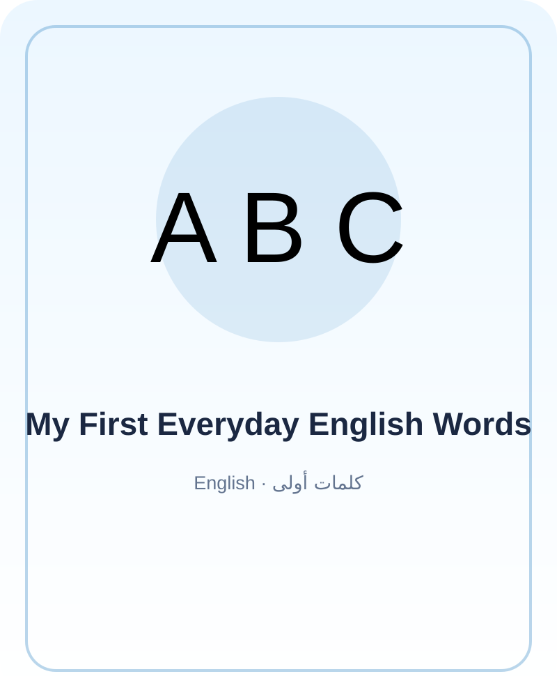

My First Everyday English Words
كتاب ثنائي اللغة للأطفال الصغار: كلمات يومية بالإنجليزية والعربية مع جمل قصيرة وأفكار لعب.
Hello, friend!
Hello means مرحبًا. قل Hello لشخص من أسرتك، ثم اسأله: How are you? يمكنه أن يجيب: I am happy.
My family
This is my family. هذه أسرتي. سمّ أفراد الأسرة بكلمات لطيفة، وارسم يدًا صغيرة تضع فيها اسم كل فرد بمساعدة شخص كبير.
The sun
The sun is bright. الشمس مضيئة. انظر من النافذة مع شخص كبير وقل: sun. ارسم شمسًا بلونك المفضل.
A red apple
I see a red apple. أرى تفاحة حمراء. قل كلمة red عندما ترى اللون الأحمر في مكان آمن حولك.
My book
This is my book. هذا كتابي. افتح كتابًا، أشر إلى صورة، ثم قل كلمة تعرفها بالعربية أو الإنجليزية.
A kind friend
My friend is kind. صديقي لطيف. اختر كلمة إنجليزية جديدة، وقلها مع ابتسامة. التكرار واللعب يساعدان على جعل التدريب ممتعًا.
لعبة الكلمات
- اختر كلمتين من القصة وكررهما مع الأسرة.
- ارسم شيئًا تعرف اسمه بالعربية والإنجليزية.
- اختر كلمة جديدة واسمعها في جملة قصيرة.
ملاحظة للأسرة: اقرأوا معًا بالوتيرة التي تناسب الطفل، واتركوا له مساحة لطرح الأسئلة أو تغيير نهاية القصة.